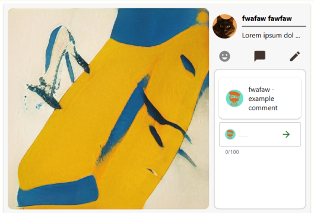
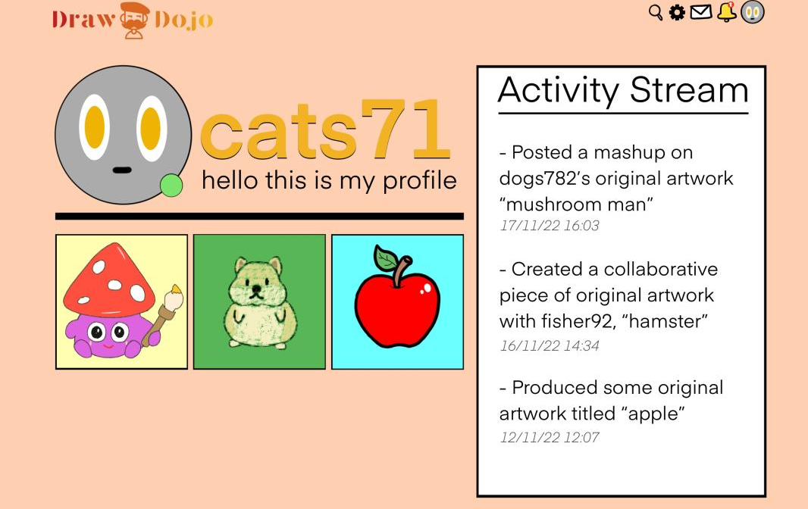

We are Draw Dojo, a seven person group designing a social media platform for our Professional Development group project.
The team has been together, meeting regularly and working on the 'Draw Dojo' platform since October of 2021.
We are all developers, with some of us taking on additional roles. You can learn more about each individual with the button below.
About UsWe are the team behind 'Draw Dojo'. We are working to create a social media platform that is both innovative and intuitive.
Draw Dojo gives everyone the chance to be an artist and to create and share something beautiful.
The platform is still in development and will be demo'd in March 2022. Learn more with the button below.
Draw DojoDraw Dojo is currently the only service we provide. It provides a platform for anyone to be a creator, an artist and an inspiration to others. Centering on Digital Art, we offer a platform for both creation and uploading of art, providing a platform to anyone and everyone.
The platform allows the user to create an account, where they can both upload their own content, and interact with the content of others. But what makes our platform especially unique is the ability to work together and 'mash-up' your art with another creator. Allowing for endless creativity and collaboration between users.
Where other platforms have images as an afterthought, we wanted them to be front and center, with our focus fully on creating something beautiful.
With a focus on customisation and personalisation, we wanted to you to allow you to continue to show off who you are with your profile. Giving you the chance to pick some posts that best represent you to showcase on your profile.
Theres also an activity feed, so your followers can keep up with what you've been working on and see who you've been collaborating with! Our focus with this project is to let several people put their best features together to create something better than the sum of its parts.
Yoav is our Organisational Manager, he is in charge of making sure tasks are allocated fairly and completed in a timely manner. Communicating with the whole team both publicly and privately to keep up to date.
James is our Technical Manager, he maintains our development standards and ensures all changes are discussed before being added to a project. He also is key in working around any development blockades that may occur.
Cameron is our Liason, he keeps communication between our team and the Team Manager. He is also responsible for any communication required with the client.
Cade is our Reporter, he keeps track of the minutes for our meetings, a written form of important information from each meeting. He makes sure each record of the meetings follow a consistent style and are provided as soon as a meeting is over.
Omar is our lead designer for Draw Dojo, working on graphics and mock-ups to ensure the platform looks as good as it can.
Oli is a backend developer and a crucial part in the design of our database systems. He is responsible for several of our backend functionality within Draw Dojo.
Louis is a front-end developer and the creator of this company website. He is responsible for the design and development of the website, as well as any changes that must be made.